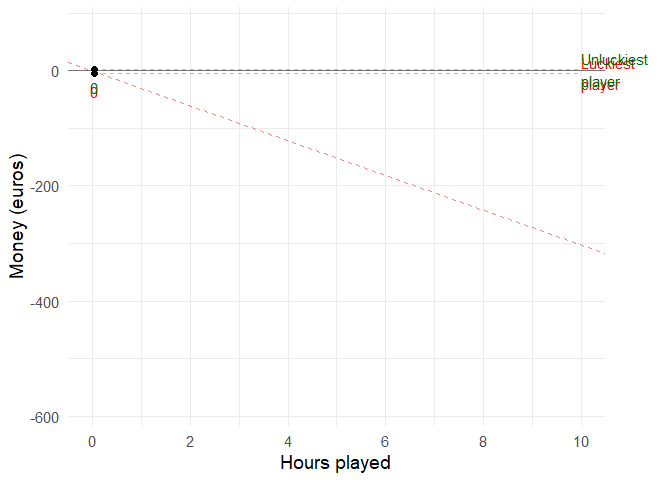
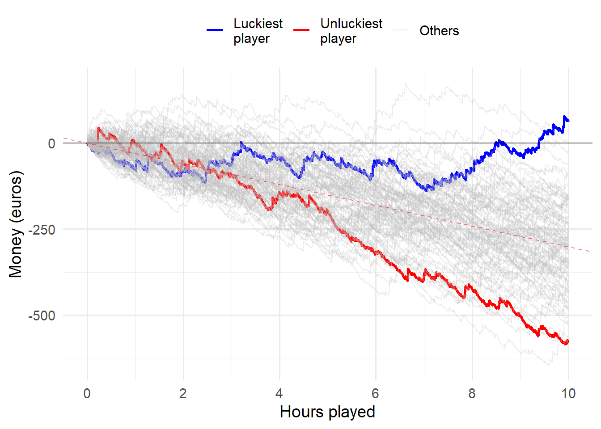
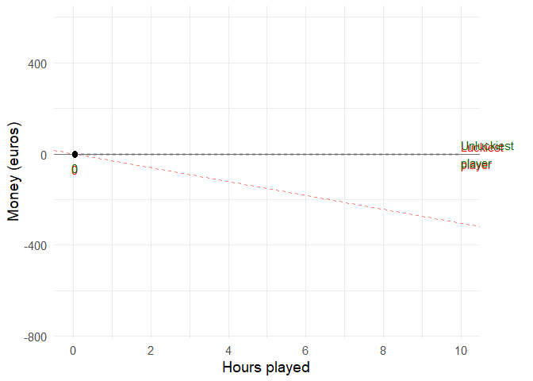
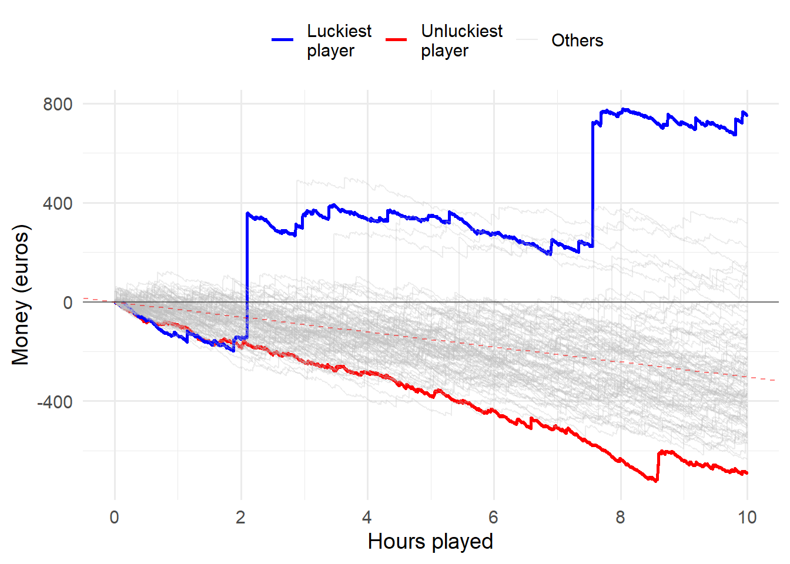
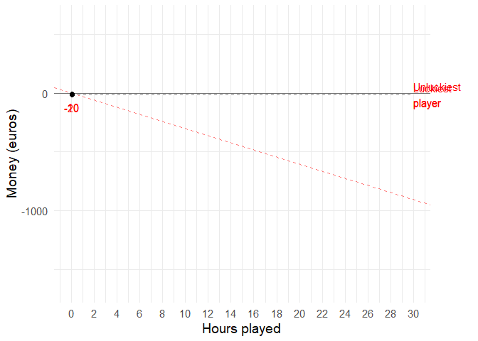
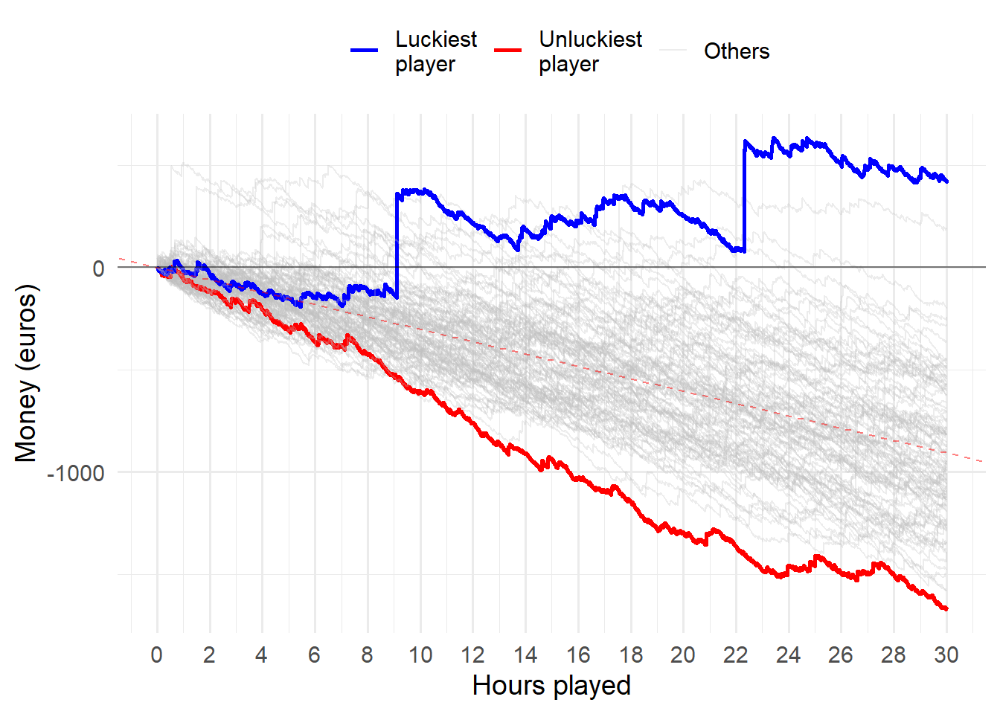
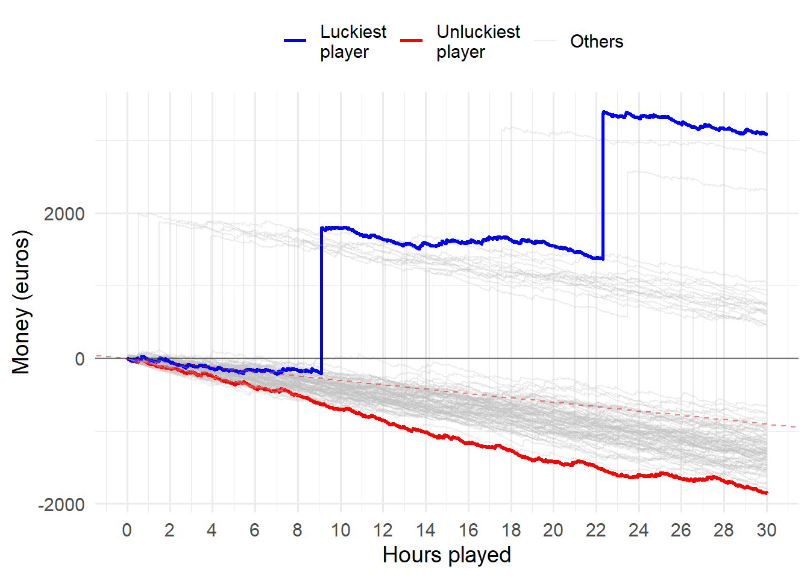
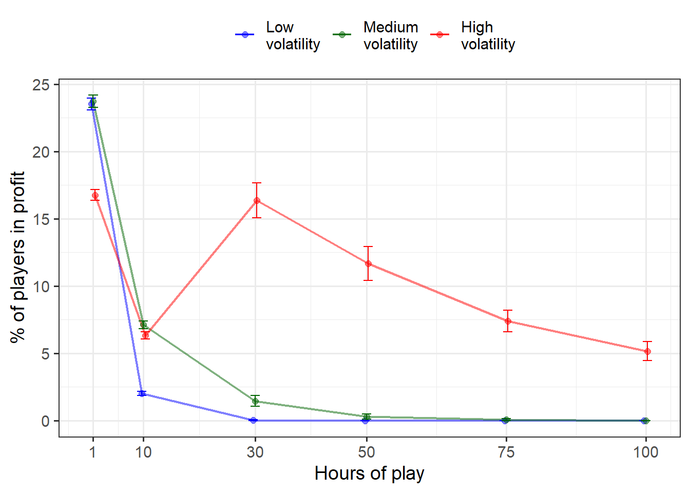

This video poker simulator seeks to illustrate the spread (variance) of wins and losses between multiple hypothetical players and different levels of game volatility. The simulator may be helpful for players who are unfamiliar with the logic of gambling, and who may be at risk of becoming problem gamblers. In the simulations…
These wins and their probabilities are based on information provided in https://www.pinnacle.com/en/betting-articles/casino/video-poker-odds-and-strategy/8RP2WGBBQFJ498LD , but may significantly differ from other video poker games (and other similar games) elsewhere
See also https://link.springer.com/article/10.1007/s10899-011-9238-0 for simulations and analyses on volatility, house edge and prize structures in different gambling games
library(tidyverse)
library(gganimate)
library(transformr)
library(truncnorm)
casino_simulator <- function(rounds, players, topbottom = F, volatility = "low") {
simulations = data.frame(nrow = 0)
#For first win simulations (Nigel Turner's idea)
first_win = data.frame(nrow = 0)
if (volatility=="low") {
payout <- c(100, 50, 30, 15, 8, 7, 3, 2, 0) - 1
probability <- c(0.002, 0.011, 0.236, 1.151, 1.101, 1.123, 7.445, 12.928, 76.003)/100
ev <- sum(payout*probability) #ev = -0.10045
sd <- sd(sample(payout, 1000000, replace = TRUE, prob = probability))
cumEV = cumsum(rep(ev, rounds))
cumSD = sqrt(cumsum(rep(sd^2, rounds))) #first convert to variance, then convert the sum back to SD
lower <- qnorm(0.025, cumEV, cumSD)
upper <- qnorm(0.975, cumEV, cumSD)
confidence <- data.frame(cbind(lower, upper))
confidence$ID <- seq.int(nrow(confidence))
}
else if (volatility=="med") {
payout <- c(500, 65, 45, 13, 7, 6, 3, 2, 0) - 1
probability <- c(0.002, 0.011, 0.236, 1.151, 1.101, 1.123, 7.445, 12.928, 76.003)/100
ev <- sum(payout*probability) #ev = -0.10066
sd <- sd(sample(payout, 1000000, replace = TRUE, prob = probability))
cumEV = cumsum(rep(ev, rounds))
cumSD = sqrt(cumsum(rep(sd^2, rounds))) #first convert to variance, then convert the sum back to SD
lower <- qnorm(0.025, cumEV, cumSD)
upper <- qnorm(0.975, cumEV, cumSD)
confidence <- data.frame(cbind(lower, upper))
confidence$ID <- seq.int(nrow(confidence))
}
else {
payout <- c(2000, 50, 33, 14, 7, 5, 3, 2, 0) - 1
probability <- c(0.002, 0.011, 0.236, 1.151, 1.101, 1.123, 7.445, 12.928, 76.003)/100
ev <- sum(payout*probability) #ev = -0.10035
sd <- sd(sample(payout, 1000000, replace = TRUE, prob = probability))
cumEV = cumsum(rep(ev, rounds))
cumSD = sqrt(cumsum(rep(sd^2, rounds))) #first convert to variance, then convert the sum back to SD
lower <- qnorm(0.025, cumEV, cumSD)
upper <- qnorm(0.975, cumEV, cumSD)
confidence <- data.frame(cbind(lower, upper))
confidence$ID <- seq.int(nrow(confidence))
}
for (i in 1:players) {
test <- sample(payout, rounds, replace=TRUE, prob=probability)
test <- data.frame(run = test)
names(test)[1] <- i #replaces run with simple integer (for simplicity). Code needs tidying a bit.
simulations <- cbind(simulations, cumsum(test))
simulations$nrow <- NULL
#Locate first win among all bets
first_win_temp <- which(test > 0)[1]
first_win_temp <- data.frame(run = first_win_temp)
names(first_win_temp)[1] <- i
first_win <- cbind(first_win, first_win_temp)
first_win$nrow <- NULL
}
max_value <- which(tail(simulations, 1) == max(tail(simulations, 1))) # Among the last row, which column has the highest value
min_value <- which(tail(simulations, 1) == min(tail(simulations, 1))) # Among the last row, which column has the lowest value
#How many are winning at the end
winners <- length(which(tail(simulations, 1) > 0))
simulations$ID <- seq.int(nrow(simulations))
simulations.long <- simulations %>%
gather(key, value, -ID) %>%
group_by(key) %>%
dplyr::mutate(profit = factor(ifelse(value > 0, 1, 0)), # Is the player winning or not
profitriskcumsum = cumsum(as.numeric(profit)-1), # cumulative number of rounds in profit
randomrisk = which(sample(c(0,1), n(), prob=c(.9999603, 1-.9999603), replace=T) == 1)[1], #among n(), produce a moment when problem gambling starts. Probability: 84 (one full week) hours of playing one has 50% chance of becoming "problem gambler" (or "high risk gambler"). 84 * 60 minutes * 5 rounds = 25200 (1- 1/25200 = .9999603)
randomrisk = ifelse(is.na(randomrisk), n(), randomrisk), #if prob gambling doesn't start, replace NA with total length of sample
randomrisk = c(rep(0, randomrisk[1]), rep(1, n() - randomrisk[1])), #vector with 0s until problem gambling starts (1s); have to index at 1 since rep-counts argument is a vector of identical values
problem = factor(case_when(profitriskcumsum > 900 | randomrisk == 1 ~ sample(c("Not at risk", "At risk"), 1, prob=c(.5, .5)), # when winning too much, 50% chance of becoming probl. gambl. OR random risk of becoming problem gambler
TRUE ~ "Not at risk"))) %>%
ungroup()
#Upswing calculations using custom sliding-window regression (width-300 i.e. 1 hour)
simulations.long <- simulations.long %>% group_by(key) %>% dplyr::mutate(id = seq(1:n()))
upswing_detector <- function(window_width = 300, fidelity=1) { #window_width = 300 = 1 hour as a definition of upswing range
estimates_slope <- list()
counter = 0
for (x in 1:length(unique(simulations.long$key))) { #iterate through all players
for (i in seq(1, length(unique(simulations.long$id))+1-window_width, by = fidelity)) { #how many sliding windows fit within the sample, fidelity to speed calculation
temp <- subset(simulations.long, key==x & id >= i & id < i+window_width) #subset based on selected window width
temp_model <- lm(value ~ id, data=temp)
counter = counter + 1
estimates_slope[[counter]] <- coef(summary(temp_model))[2,1]
}
}
estimates_slope <- as.data.frame(unlist(estimates_slope))
estimates_slope <- estimates_slope %>%
dplyr::mutate(ID=rep(1:players, each=(length(unique(simulations.long$id))-window_width) / fidelity + 1)) # +1 before -window_width removed since otherwise doesn't work with fidelity=1 for some reason
names(estimates_slope)[1] <- "slope"
# Calculate proportion of upswings (vs. downswings) for all players, then obtain mean and sd across players, as well as maximum streak length with sd
output1 <- estimates_slope %>%
group_by(ID) %>%
dplyr::mutate(positive = ifelse(slope > 0, 1, 0),
run_length = rep(rle(positive)$lengths, rle(positive)$lengths)) %>%
dplyr::summarize(pos_prop = mean(positive),
max_run = max(run_length)) %>%
ungroup() %>%
dplyr::summarize(mean_grand_prop = mean(pos_prop),
sd_grand_prop = sd(pos_prop),
mean_run = mean(max_run),
sd_run = sd(max_run))
output2 <- estimates_slope %>%
group_by(ID) %>%
dplyr::mutate(numb = 1:n(), upswing = factor(ifelse(slope > 0, "Upswing", "Downswing"))) %>%
ggplot(aes(numb, slope, color=upswing)) +
geom_line(aes(group=1)) +
#facet_wrap("ID", scales="free") +
labs(color=NULL, x = "Hours played", y = "Slope") +
scale_color_manual(values=c("red", "blue")) +
scale_x_continuous(breaks = seq(0, (rounds-window_width)/10, by = 60),
labels=function(x)round(x/5/6 +1, 1)) + #+1 jotta saadaan tasattua normiplotin kanssa
theme_minimal(base_size=14) +
theme(legend.position="bottom")
output3 <- estimates_slope %>%
rename(key = ID) %>%
group_by(key) %>%
dplyr::mutate(key = as.character(key), ID = 1:n(), upswing = factor(ifelse(lag(slope, window_width/2) > 0, "Upswing", "Downswing")),
slope_corrected = lag(slope, window_width/2),
upswing_prop = mean(as.numeric(upswing)-1, na.rm=T)) #difficult to visualize upswings!! (this is not optimal, using lag() since the last 300 (window length) observations are missing by design)
#return(ggarrange(output2, plot3))
return(output3) #for colored visulaization of upswing
#return(output1) #for upswing proportion calculations
}
# !!!!!uncomment below to be able to use plot4!!!!!
#simulations.long <- simulations.long %>% left_join(upswing_detector())
#This was for testing whether the upswing detector works (un-comment below, and add "labs(title = output)" to plot3)
#output <- upswing_detector()
#THIS IS AN ALPHA VERSION: Illustrations of "at risk" players based on time as a winner and length of play
# plot <- simulations.long %>%
# dplyr::mutate(problem = fct_relevel(problem, "Not at risk")) %>% #force factor level order (simulations mess this up every now and then...)
# ggplot(aes(ID, value, group=key)) + # group=key here required for complex animation
# geom_line(aes(colour = problem, size = problem)) +
# geom_abline(intercept = 0, slope = ev, linetype="dashed", size=0.5, color="red", alpha=.5) +
# geom_hline(yintercept = 0, size=0.5, alpha=.5) +
# xlab("Hours played") + ylab("Money (euros)") +
# theme_minimal(base_size=14) +
# scale_x_continuous(breaks = seq(0, rounds, by = 600), #by = 600 on by 2 hours (i.e. 600 rounds / 5 / 60)
# labels=function(x)round(x/5/60, 1)) +
# theme(legend.title = element_blank(),
# legend.position = "top") +
# scale_color_manual(values=c("lightblue", "red")) +
# scale_size_manual(values = c(.3, 1))
# # guides(color="none")
# Plot only the top and bottom "players"
# Note, for animations, the coloring is sensitive to alphabetical order of the key-factor labels!
plot2 <- simulations.long %>%
dplyr::filter(key == max_value | key == min_value) %>%
dplyr::mutate(key = factor(key, levels = c(max_value, min_value),
labels = c("Luckiest\nplayer", "Unluckiest\nplayer"))) %>%
ggplot(aes(ID, value, group=key)) +
geom_line(aes(colour = key)) +
geom_abline(intercept = 0, slope = ev, linetype="dashed", size=0.5, color="red", alpha=.5) +
geom_hline(yintercept = 0, size=0.5, alpha=.5) +
xlab("Hours played") + ylab("Money (euros)") +
theme_minimal(base_size=14) +
scale_x_continuous(breaks = seq(0, rounds, by = 600), # If <0 hour is visualized, the x-axis will not show correctly
labels=function(x)round(x/5/60, 1)) +
guides(color="none")
# Combined plot
# (code may fail if there are 3 or more identical values (shared bottom or top))
plot3 <- simulations.long %>%
dplyr::mutate(maxmin = case_when(key == max_value ~ "Luckiest\nplayer",
key == min_value ~ "Unluckiest\nplayer",
TRUE ~ "Others"),
maxmin = factor(maxmin, levels = c("Luckiest\nplayer", "Unluckiest\nplayer", "Others"))) %>%
ggplot(aes(ID, value, group=key)) +
geom_line(aes(colour = maxmin, alpha = maxmin, size = maxmin)) +
geom_abline(intercept = 0, slope = ev, linetype="dashed", size=0.5, color="red", alpha=.5) +
geom_hline(yintercept = 0, size=0.5, alpha=.5) +
#uncomment these if we want confidence interval:
# geom_line(data = confidence, aes(x = ID, y = lower), linetype="dashed", color="black", size=0.5, inherit.aes=F) +
# geom_line(data = confidence, aes(x = ID, y = upper), linetype="dashed", color="black", size=0.5, inherit.aes=F) +
xlab("Hours played") + ylab("Money (euros)") +
scale_color_manual(values=c("blue", "red", "grey")) +
theme_minimal(base_size=14) +
theme(legend.title = element_blank(),
legend.position = "top") +
scale_x_continuous(breaks = seq(0, rounds, by = 600),
labels=function(x)round(x/5/60, 1)) +
scale_alpha_manual(values = c(1, 1, .3)) +
scale_size_manual(values = c(1, 1, .5))
#labs(title = paste("Upswing proportion (SD): ", round(output[1], 3), "(", round(output[2], 3), ")"))
#Upswing visualization (not optimal!)
plot4 <- simulations.long %>%
# dplyr::mutate(slope_corrected = ifelse(is.na(slope_corrected), 0, slope_corrected)) %>% ## I'm switching back to numeric for testing purposes, fix later
na.omit() %>%
ggplot(aes(ID, value, group=key)) +
geom_line(aes(colour = slope_corrected), size=0.9) +
geom_abline(intercept = 0, slope = ev, linetype="dashed", size=0.5, color="red", alpha=.5) +
geom_hline(yintercept = 0, size=0.5, alpha=.5) +
xlab("Hours played") + ylab("Money (euros)") +
labs(color = "Streak strength") +
theme_minimal(base_size=14) +
theme(legend.position = "top") +
scale_alpha_manual(values = c(1, 1, .3)) +
scale_size_manual(values = c(1, 1, .5)) +
scale_color_gradient2(low="red", mid = "lightblue", high="blue") +
scale_x_continuous(breaks = seq(0, rounds, by = 600),
labels=function(x)round(x/5/60, 1))
#Add the below only if upswing_detector is used!
# annotate("text", x = 550, y = 60,
# label = paste("Winning streaks:", round(simulations.long$upswing_prop[1], 3)*100, "%"))
# # annotate("text", x = 550, y = 60,
# # label = paste("Winning streaks:", round(simulations.long$upswing_prop[1], 3)*100, "%",
# # round(simulations.long$upswing_prop[rounds+1], 3)*100, "%")) #This is an ugly fix, not for long-term use
if (topbottom == F) {
return(plot3) #winners for number of winners
}
else {
return(plot2) #or upswing_detector()
#plot for problem gambling risk plot (ALPHA VERSION!), plot2 for top and bottom, winners for number of winners at end. Visualizations work with "plot2". Note that the code may break (update to fix this is pending) if two players have idential wins or losses at the top or bottom (this is quite rare but may happen). upswing_detector() for mean length and sd of average upswings (defined as upwards trending streak of 2 hours)
}
}
#for basic calculations e.g. mean(replicate(5, casino_simulator(300, 100, F, "low"))); FOR THIS USE "winners" as the return output!
#Histograms of first win distributions. To use these, return must be at "first_win"
# gather(casino_simulator(500, 1000, F, "high")) %>%
# ggplot(aes(value)) +
# geom_histogram(color = "grey", fill ="lightblue", bins = 25) +
# theme_classic() +
# labs(y = "Observations", x = "First win occurrence", color = NULL, title = "Volatility: High") +
# geom_vline(aes(xintercept=median(as.numeric(value), na.rm=T), color="Median"), size=1) +
# geom_vline(aes(xintercept=mean(as.numeric(value), na.rm=T), color="Mean"), size=1) +
# geom_text(aes(label = mean(value), y = 200, x = mean(value)), color = "red") +
# geom_text(aes(label = median(value), y = 250, x = median(value)), color = "blue") +
# scale_color_manual(values = c("red", "blue")) +
# theme(legend.position = c(.5, .5))If you and 99 of your friends all played the low volatility video poker game for 10 hours, the luckiest and unluckiest one of you might have the following results:
set.seed(1)
animation <- casino_simulator(3000, 100, T, "low") +
geom_segment(aes(xend = 3000, yend = value), linetype = 2, colour = 'grey') +
geom_point(size=2) +
geom_text(aes(x = 3000, label = key, color=profit), hjust = 0) +
geom_text(aes(x = ID, label = round(value, -1), color = profit), vjust=2) +
scale_color_manual(values=c("red", "darkgreen", "lightblue", "salmon")) +
transition_reveal(ID) +
coord_cartesian(clip = 'off') +
theme(plot.margin = margin(5.5, 50, 5.5, 5.5))
animate(animation, duration = 15, fps = 10)
set.seed(1)
casino_simulator(3000, 100, F, "low")
If you and 99 of your friends all played the medium volatility video poker game for 10 hours, the luckiest and unluckiest one of you might have the following results:
set.seed(1)
animation <- casino_simulator(3000, 100, T, "med") +
geom_segment(aes(xend = 3000, yend = value), linetype = 2, colour = 'grey') +
geom_point(size=2) +
geom_text(aes(x = 3000, label = key, color=profit), hjust = 0) +
geom_text(aes(x = ID, label = round(value, -1), color = profit), vjust=2) +
scale_color_manual(values=c("red", "darkgreen", "lightblue", "salmon")) +
transition_reveal(ID) +
coord_cartesian(clip = 'off') +
theme(plot.margin = margin(5.5, 50, 5.5, 5.5))
animate(animation, duration = 15, fps = 10)
set.seed(1)
casino_simulator(3000, 100, F, "med")
If you and 99 of your friends all played the medium volatility video poker game for 30 hours, the luckiest and unluckiest one of you would have the following results:
set.seed(1)
animation <- casino_simulator(9000, 100, T, "med") +
geom_segment(aes(xend = 9000, yend = value), linetype = 2, colour = 'grey') +
geom_point(size=2) +
geom_text(aes(x = 9000, label = key, color=profit), hjust = 0) +
geom_text(aes(x = ID, label = round(value, -1), color = profit), vjust=2) +
scale_color_manual(values=c("red", "darkgreen", "lightblue", "salmon")) +
transition_reveal(ID) +
coord_cartesian(clip = 'off') +
theme(plot.margin = margin(5.5, 50, 5.5, 5.5))
animate(animation, duration = 25, fps = 10)
set.seed(1)
casino_simulator(9000, 100, F, "med")
When the “main prize” is very large, there are proportionally, and perhaps even deceptively, more players in profit (“lucky winners”).
set.seed(1)
casino_simulator(9000, 100, F, "high")
Below I’ve calculated the mean- and standard deviation values for proportion of winning players after a specific number of rounds played for all three levels of volatility. This is done by rerunning the simulations multiple times (500, 100, 75 or 50 times depending on the number of rounds being simulated and computing time requirements – note that this part of the code was run externally).
The mean proportion of players who are winning after 1, 10, 30, 50, 75 or 100 hours of play depends heavily on the game’s volatility level. Figure 1 shows that the proportion of players in profit (“lucky winners”) significantly depends on volatility. In the high volatility version of the game, 16.37 % are winning after 30 hours of play, and 5.16 % are winning even after 100 hours of continued play. Error bars represent 95 % confidence intervals.
#Values below obtained from externally run simulations!
winners <- tibble(mean = c(23.52, 2.03, 0.02, 0, 0, 0,
23.74, 7.11, 1.46, 0.307, 0.06, 0,
16.76, 6.33, 16.37, 11.68, 7.38, 5.16),
sd = c(4.14, 1.39, 0.14, 0, 0, 0,
4.15, 2.56, 1.25, 0.544, 0.24, 0,
3.71, 2.45, 4.06, 3.414, 2.31, 2.06),
sims = rep(c(500, 500, 100, 75, 50, 50), 3),
volatility = rep(c("Low\nvolatility", "Medium\nvolatility", "High\nvolatility"), each = 6),
length = rep(c(1, 10, 30, 50, 75, 100), 3)) %>%
group_by(sims) %>%
dplyr::mutate(se = sd / sqrt(sims),
lower = mean - qt(.975, n())*se,
upper = mean + qt(.975, n())*se,
volatility = factor(volatility, levels=c("Low\nvolatility", "Medium\nvolatility", "High\nvolatility")))
winners %>% ggplot(aes(length, mean, color = volatility)) +
geom_line(position = position_dodge(.9), size=.8, alpha=.5) +
geom_point(position = position_dodge(.9), size=2, alpha =.5) +
geom_errorbar(aes(ymax = upper, ymin = pmax(lower, 0)),
position=position_dodge(.9), width=5) +
theme_bw(base_size=14) +
theme(legend.position="top") +
#geom_text(aes(length, mean, label=round(mean, 2)), show.legend = F, inherit.aes=F) +
scale_color_manual(values = c("blue", "darkgreen", "Red")) +
scale_x_continuous(breaks = c(1, 10, 30, 50, 75,100)) +
labs(x = "Hours of play", y = "% of players in profit", color = NULL)